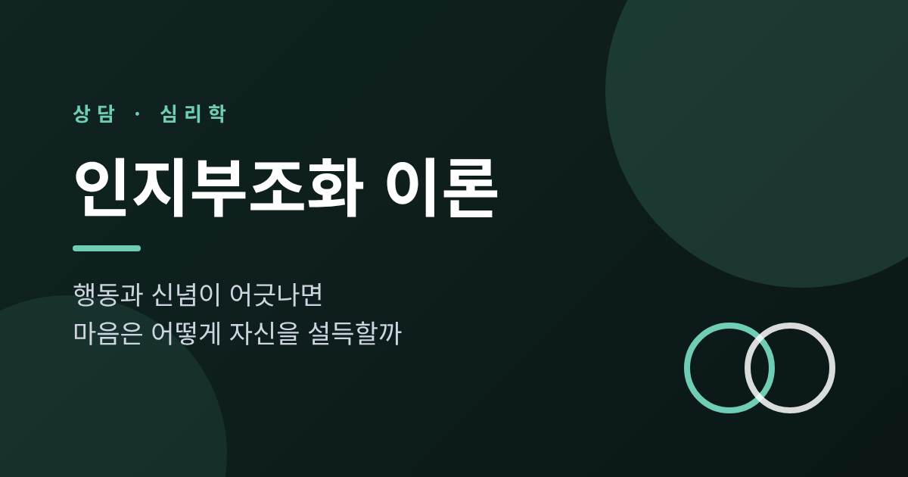
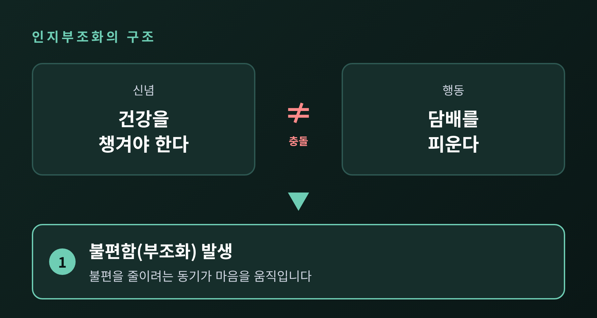
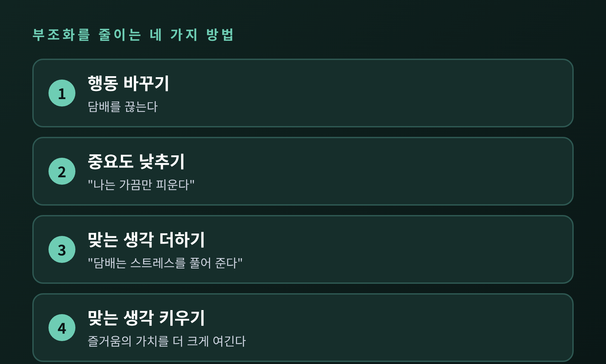
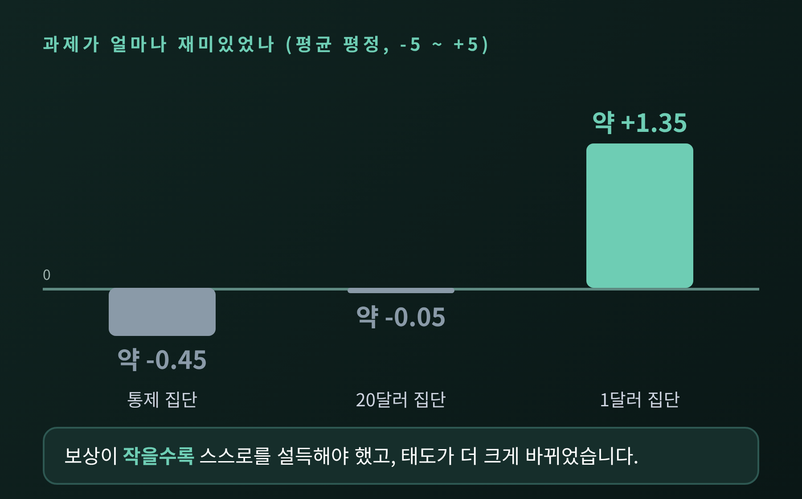
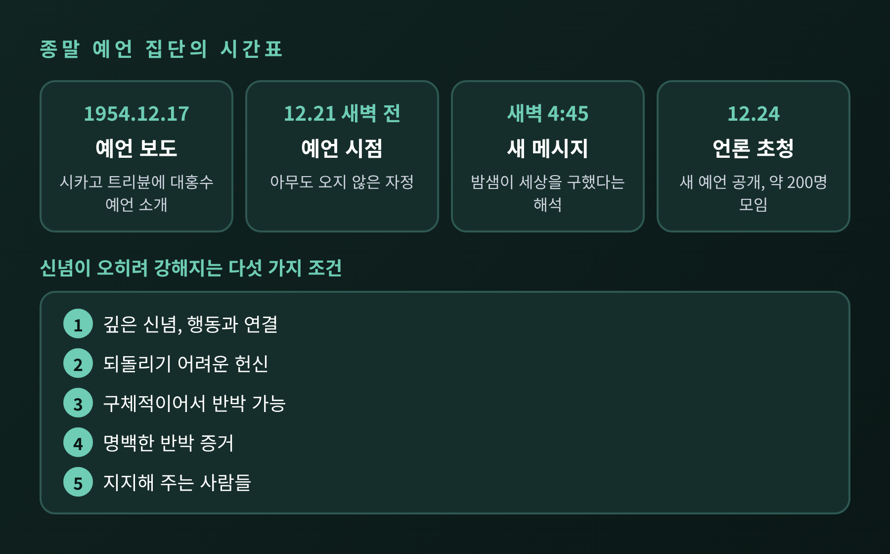
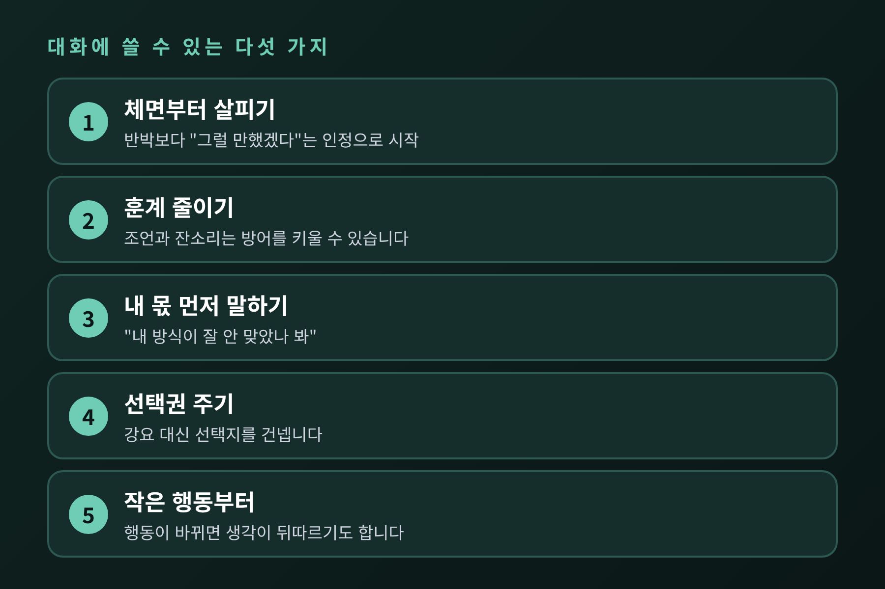

이번 글에서는 인지부조화 이론을 정리해 보겠습니다. 생각과 행동이 어긋나면 사람은 불편해지고, 그 불편을 줄이려고 행동보다 생각을 먼저 고치는 경우가 많습니다. 페스팅거의 고전 실험 두 편과 부모와 자녀 사이의 대화에 주는 시사점까지 차례로 살펴봅니다.
인지부조화는 레온 페스팅거가 1957년 저서 『A Theory of Cognitive Dissonance』에서 내놓은 이론입니다.
여기서 인지는 자신과 행동, 환경에 대해 갖고 있는 모든 지식과 믿음을 뜻합니다. 페스팅거는 이 인지들 사이에 서로 맞지 않는 관계가 생기는 상태를 부조화라고 불렀습니다.
예를 들어 보겠습니다. "건강을 챙겨야 한다"고 믿는 사람이 담배를 피우고 있다면, 두 인지는 어긋납니다. 이때 사람은 불편함을 느낍니다. 배고픔이 먹게 만드는 것처럼, 이 불편함이 마음을 움직이는 동력이 된다고 이론은 설명합니다.
불편의 크기는 어긋나는 생각의 개수와 중요도에 달려 있습니다. 사소한 어긋남은 쌓이기 전까지 크게 느껴지지 않습니다. 자기에게 중요한 문제일수록 압박은 커집니다.

불편이 생기면 마음은 출구를 찾습니다. 페스팅거가 제시한 경로는 네 가지입니다.
첫째, 어긋나는 행동이나 지식을 바꿉니다. 담배를 끊는 것이 여기에 해당합니다. 가장 정직한 방법이지만 습관이 걸려 있으면 어렵습니다.
둘째, 어긋나는 생각의 중요도를 낮춥니다. "나는 가끔만 피운다"는 식입니다.
셋째, 맞는 생각을 보탭니다. "담배가 스트레스를 풀어 준다"는 믿음이 대표적입니다. 흡연자 연구에서도 이런 기능적 믿음과 "의학적 해악은 과장됐다"는 믿음이 자주 나타났습니다.
넷째, 이미 있던 맞는 생각의 비중을 키웁니다.
행동은 이미 벌어졌고 되돌리기도 어렵습니다. 그래서 대개는 바꾸기 쉬운 쪽, 즉 생각이 움직입니다. 이 점이 핵심입니다. 사람은 생각에 따라 행동하기도 하지만, 행동에 맞춰 생각을 고치기도 합니다.

1959년 페스팅거와 칼스미스는 이 이론을 실험으로 확인했습니다. 스탠퍼드대 남학생 71명이 참여했습니다.
참가자들은 못을 돌리는 것 같은 지루한 단순 작업을 한 시간 동안 했습니다. 그런 다음 실험자가 부탁했습니다. 다음 참가자에게 "이 과제는 재미있었다"고 말해 달라는 것이었습니다. 보수는 한 집단에 1달러, 다른 집단에 20달러였습니다. 거의 모두가 부탁을 받아들였습니다.
나중에 과제가 얼마나 재미있었는지 물었습니다. 점수는 -5(매우 지루함)부터 +5(매우 흥미로움)까지였습니다. 결과는 이랬습니다.
보상이 클수록 변화도 클 것이라는 당시 행동주의의 예측과는 반대였습니다.
설명은 이렇습니다. 20달러를 받은 사람에게는 거짓말을 할 분명한 이유가 있었습니다. "돈 때문에 그랬다"고 하면 마음이 편했습니다. 1달러를 받은 사람은 그 이유가 약했습니다. "나는 별것 아닌 돈에 거짓말하는 사람인가"라는 불편이 남았고, 그 불편을 줄이려고 "생각보다 괜찮은 과제였다"고 스스로 믿게 된 것으로 해석합니다.

다만 이 결과를 해석하는 방식에는 논쟁이 있습니다. 벰(Bem)은 사람이 자기 행동을 보고 태도를 추론할 뿐이라며 부조화라는 내적 긴장은 필요 없다고 보았습니다. 쿠퍼와 파지오는 불일치 자체보다 해로운 결과에 대한 책임감이 불편의 원인이라고 주장했습니다. 아론슨은 "나는 정직한 사람"이라는 자기상이 흔들리는 것이 핵심이라고 보았습니다. 이론의 세부 메커니즘은 지금도 다듬어지는 중입니다.
페스팅거는 실험실 밖에서도 이 현상을 관찰했습니다. 1956년에 리케, 샤흐터와 함께 낸 『When Prophecy Fails』입니다.
시카고의 도로시 마틴은 자동기술로 외계 존재의 메시지를 받는다고 주장했습니다. 1954년 12월 21일 새벽 전에 대홍수가 닥치며, 비행접시가 추종자들을 구해 준다는 예언이었습니다. 일부 신도는 소유물을 내놓고 대피를 준비했습니다. 연구자들은 신분을 숨기고 이 집단에 들어가 관찰했습니다.
예언한 밤, 신도들은 자정을 기다렸습니다. 아무도 오지 않았습니다. 시계가 자정을 넘겼고, 새벽 4시경 마틴은 눈물을 흘렸습니다. 4시 45분쯤 새 메시지가 전해졌습니다. 이 집단의 밤샘이 세상에 빛을 퍼뜨려 하나님이 세상을 구했다는 내용이었습니다.
그 뒤 집단은 달라졌습니다. 예전엔 대외 노출을 꺼렸습니다. 이제는 12월 24일에 언론을 불러 새 예언을 알렸고, 약 200명의 구경꾼이 모였습니다. 덜 헌신했던 사람들은 조용히 떠났고, 가장 헌신했던 사람들은 더 열심히 알리는 쪽을 택했다고 정리됩니다.
페스팅거는 이런 반응이 나타나는 조건 다섯 가지를 제시했습니다. 신념이 깊고 행동과 이어져 있을 것, 되돌리기 어려운 비용을 치렀을 것, 현실에서 반박될 만큼 구체적일 것, 반박 증거가 분명할 것, 곁에 지지해 주는 사람들이 있을 것입니다. 이미 많은 것을 걸었을수록 "내가 틀렸다"는 결론은 더 견디기 어렵습니다.
한계도 분명히 해 두겠습니다. 이 연구에 대해서는 관찰자가 사건에 영향을 주었고 연구자의 가설이 해석에 작용했을 수 있다는 비판이 있습니다. 모든 신념이 반박 앞에서 강해진다는 뜻으로 읽어서는 안 됩니다.

노력이 클수록 결과를 높게 평가하는 경향도 같은 원리로 설명됩니다. 아론슨과 밀스가 1959년에 한 실험이 잘 알려져 있습니다.
여대생 63명이 토론 모임에 가입하려 했습니다. 한 집단은 외설적인 글을 소리 내어 읽는 어색하고 힘든 입회 절차를 거쳤고, 다른 집단은 가벼운 절차만 거쳤습니다. 그런데 정작 토론은 지루하고 산만하게 녹음된 내용이었습니다. 힘든 절차를 거친 집단이 모임을 더 호의적으로 평가했습니다.
"그렇게 고생했는데 별 볼 일 없는 모임일 리 없다"는 논리입니다. 신고식이나 입회 의식이 집단의 결속을 높이는 장면을 이 틀로 볼 수 있습니다. 이 실험의 입회 절차는 실제보다 훨씬 약했고, 다른 설명을 완전히 배제하지 못했다는 지적도 있습니다.
여기서부터는 이론을 일상에 비춰 본 이야기입니다. 특정 연구 결과가 아니라 일반화한 적용임을 먼저 밝혀 둡니다.
부모와 자녀 사이에서도 비슷한 일이 생길 수 있습니다. 예를 들어 "나는 아이를 믿어 주는 부모"라고 생각하는 사람이 어느 날 화가 나서 아이의 휴대전화를 확인했다고 해 보겠습니다. 신념과 행동이 어긋납니다. 이때 "그럴 만한 일이었다"는 식으로 행동을 합리화하면 마음은 편해집니다. 하지만 그 순간 대화의 문은 닫힙니다.
청소년도 마찬가지입니다. 약속을 어기고도 "어차피 중요하지 않았다"고 말하는 것은 뻔뻔함이라기보다 흔들린 자기상을 지키려는 반응일 수 있습니다. 이론에서 부조화의 핵심은 자기개념이 위협받는 것이라는 해석이 있습니다. 비난이 거세질수록 방어도 거세지는 이유가 여기에 있습니다.
또 하나. 지금까지 쓴 시간과 노력이 클수록 방향을 틀기 어려워집니다. 그동안의 양육 방식을 돌아보는 일이 부모에게 쉽지 않은 까닭도 같습니다.
이론에서 끌어낸 것과 상담 현장의 일반적인 조언을 합쳐 정리했습니다.

마지막으로 한 가지만 덧붙이겠습니다. 합리화는 나쁜 마음이 아니라 마음이 균형을 잡으려는 방식입니다. 다만 그것이 반복되면 정작 돌아봐야 할 행동은 그대로 남습니다.
핵심은 이렇습니다. "마음은 사실보다 일관성을 먼저 지키려 한다."
내가 방금 한 말을 스스로 납득시키고 있지는 않은지, 상대의 변명 뒤에 지키고 싶은 자기상이 있지는 않은지 한 번 살펴보시길 권합니다. 그 질문 하나가 대화의 온도를 바꾸는 경우가 적지 않습니다.
가족 안의 갈등이나 반복되는 감정 소진이 일상에 영향을 줄 정도라면, 혼자 해결하려 하지 말고 전문 상담사나 정신건강 전문가와 이야기해 보시길 권합니다. 이 글은 이해를 돕기 위한 일반 정보이며, 진단이나 치료를 대신하지 않습니다.